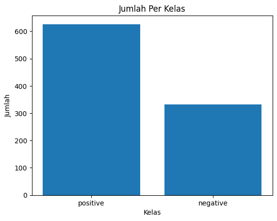
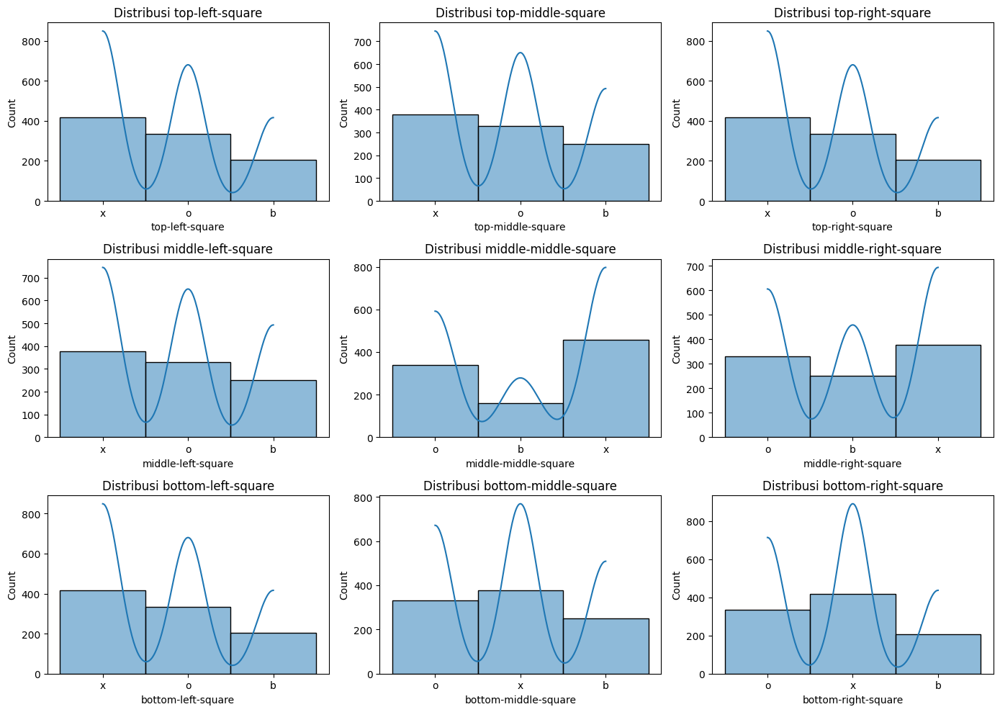

#mneghubungkan ke drive
from google.colab import drive
drive.mount('/content/drive')Drive already mounted at /content/drive; to attempt to forcibly remount, call drive.mount("/content/drive", force_remount=True).#mneghubungkan ke drive
from google.colab import drive
drive.mount('/content/drive')Drive already mounted at /content/drive; to attempt to forcibly remount, call drive.mount("/content/drive", force_remount=True).cd /content/drive/MyDrive/PSD/tugas/content/drive/MyDrive/PSD/tugasimport pandas as pd
from sklearn.model_selection import train_test_split
from sklearn.ensemble import RandomForestClassifier
from sklearn.metrics import accuracy_score, classification_report, confusion_matrix
from sklearn.preprocessing import OneHotEncoder
from sklearn.preprocessing import LabelEncoder
from sklearn.neighbors import KNeighborsClassifier
from sklearn.naive_bayes import GaussianNB
from sklearn.tree import DecisionTreeClassifier
from sklearn.ensemble import ExtraTreesClassifier
from sklearn.linear_model import LogisticRegression
from sklearn.metrics import accuracy_score, classification_report
from sklearn.svm import SVC
from sklearn.metrics import accuracy_score
import matplotlib.pyplot as plt
import seaborn as snsTUJUAN ANALISIS DATA : Analisis data Tic-TacToe EndGame ini untuk memprediksi apakah permainan akan dimenangkan oleh pemain ‘x’ atau tidak. ‘win for x,’ yang berarti pemain ‘x’ harus berhasil menciptakan salah satu dari 8 kemungkinan cara untuk mencapai ‘three-in-a-row,’ yaitu menempatkan tiga tanda ‘x’ secara berurutan dalam satu baris, kolom, atau diagonal.
Dataset ini merupakan kumpulan lengkap konfigurasi papan di akhir permainan tic-tac-toe, di mana ‘x’ diasumsikan bermain terlebih dahulu. Konsep targetnya adalah ‘kemenangan untuk x’ (membuat ‘tiga berjejer’).
Dalam permainan Tic-Tac-Toe, ada dua pemain, biasanya disebut ‘x’ dan ‘o,’ yang bergiliran menempatkan tanda mereka di papan permainan 3x3. Tujuan permainan adalah mencapai ‘win for x,’ yang berarti pemain ‘x’ harus berhasil menciptakan salah satu dari 8 kemungkinan cara untuk mencapai ‘three-in-a-row,’ yaitu menempatkan tiga tanda ‘x’ secara berurutan dalam satu baris, kolom, atau diagonal.
Deskripsi tersebut mencatat bahwa Dataset ini mencakup semua konfigurasi papan pada akhir permainan Tic-Tac-Toe, dengan asumsi bahwa ‘x’ selalu bermain pertama.
Ini adalah tugas klasifikasi di mana model pembelajaran mesin mencoba memprediksi hasil permainan, yaitu apakah ‘x’ akan memenangkan permainan atau tidak.
Tipe Data > Tipe data dari Dataset ini adalah Categorical
Subject Area > Dataset ini digunakan dalam Game Tic-Tac-Toe
jumlah data : 958 bari > Dataset ini berisi 958 permainan yang mencakup semua konfigurasi papan pada akhir permainan Tic-Tac-Toe
Missing Value >Dataset ini TIDAK MEMILIKI Missing Values** yang berarti bahwa setiap bagian data pada dataset lengkap dengan informasi.
Dataset ini menggunakan Class sebagai Targetnya dimana Fitur ini menunjukan apakah akhir dari permainan dimenangkan oleh ‘x’ atau tidak.
DATASET
url = "https://raw.githubusercontent.com/jennamacwe/ProyekSainData/main/tic-tac-toe_Endgame2.csv"
dataset = pd.read_csv(url, header=None)
# Menambahkan kolom
dataset.columns = ["top-left-square", "top-middle-square", "top-right-square", "middle-left-square", "middle-middle-square", "middle-right-square", "bottom-left-square", "bottom-middle-square", "bottom-right-square", "Class"]
# Menampilkan dataset dengan kolom tambahan
print(dataset) top-left-square top-middle-square top-right-square middle-left-square \
0 x x x x
1 x x x x
2 x x x x
3 x x x x
4 x x x x
.. ... ... ... ...
953 o x x x
954 o x o x
955 o x o x
956 o x o o
957 o o x x
middle-middle-square middle-right-square bottom-left-square \
0 o o x
1 o o o
2 o o o
3 o o o
4 o o b
.. ... ... ...
953 o o o
954 x o x
955 o x x
956 x x x
957 x o o
bottom-middle-square bottom-right-square Class
0 o o positive
1 x o positive
2 o x positive
3 b b positive
4 o b positive
.. ... ... ...
953 x x negative
954 o x negative
955 o x negative
956 o x negative
957 x x negative
[958 rows x 10 columns]# Menampilkan kolom pada dataset
print(dataset.columns)Index(['top-left-square', 'top-middle-square', 'top-right-square',
'middle-left-square', 'middle-middle-square', 'middle-right-square',
'bottom-left-square', 'bottom-middle-square', 'bottom-right-square',
'Class'],
dtype='object')Jumlah Fitur pada dataset Permainan Tic-Tac-toe ini sebanyak 9 Fitur dimana setiap fitur mempresentasikan setiap kotak pada permainan
top-left-square : kotak pada bagian kiri baris teratas
top-middle-square : kotak pada bagian tengah baris teratas
top-right-square : kotak pada bagian kanan baris teratas
middle-left-square : kotak pada bagian kiri baris tengah
middle-middle-square : kotak pada bagian tengah baris tengah
middle-right-square : kotak pada bagian kanan baris tengah
bottom-left-square : kotak pada bagian kiri baris bawah
bottom-middle-square : kotak pada bagian tengah baris bawah
bottom-righ-square : kotak pada bagian kiri baris bawah
Dataset didapatkan dari UCI Machine Learning Repository dan dapat diakses melalui link di bawah ini:
https://archive.ics.uci.edu/dataset/101/tic+tac+toe+endgam
Menampilkan grafik jumlah per kelas (negatif dan positif) dari dataset dan Jumlah masing-masing Kelas untuk mengetahui kelas mana yang terbanyak. Jumlah data per Kelas beserta Grafik ditampilkan dibawah ini:
# Menghitung jumlah per kelas
class_counts = dataset['Class'].value_counts()
# Print jumlah per kelas
for class_label, count in class_counts.items():
print(f'Kelas {class_label}: {count} data')
print("\n")
# Plot grafik jumlah per kelas
plt.bar(class_counts.index, class_counts.values)
plt.xlabel('Kelas')
plt.ylabel('Jumlah')
plt.title('Jumlah Per Kelas')
plt.show()
# Menghitung jumlah per kelas
# class_counts = dataset['Class'].value_counts()Kelas positive: 626 data
Kelas negative: 332 data

Menampilkan gambaran umum tentang distribusi nilai dalam setiap kolom kategorikal pada dataset.
# Summary statistics
print("\nSummary statistics:")
print(dataset.describe(include='all'))
Summary statistics:
top-left-square top-middle-square top-right-square middle-left-square \
count 958 958 958 958
unique 3 3 3 3
top x x x x
freq 418 378 418 378
middle-middle-square middle-right-square bottom-left-square \
count 958 958 958
unique 3 3 3
top x x x
freq 458 378 418
bottom-middle-square bottom-right-square Class
count 958 958 958
unique 3 3 2
top x x positive
freq 378 418 626 Berikut adalah tafsir dari beberapa bagian dari output statistik ringkasan:
Count (Jumlah): Menunjukkan jumlah entri non-null (tidak kosong) dalam setiap kolom.
Unique (Unik): Menunjukkan jumlah nilai unik dalam setiap kolom.
Top (Teratas): Menunjukkan nilai yang paling sering muncul dalam setiap kolom.
Freq (Frekuensi): Menunjukkan frekuensi kemunculan nilai teratas dalam setiap kolom.
MEnampilkan apakah terdapat nilai yang hilang (missing values) dalam dataset.
Ini adalah langkah yang penting dalam eksplorasi data karena nilai yang hilang dapat mempengaruhi hasil analisis dan model yang dibangun.
# Checking for missing values
print("Missing values:")
print(dataset.isnull().sum())Missing values:
top-left-square 0
top-middle-square 0
top-right-square 0
middle-left-square 0
middle-middle-square 0
middle-right-square 0
bottom-left-square 0
bottom-middle-square 0
bottom-right-square 0
Class 0
dtype: int64Pada output yang di hasilkan terlihat bahwa tidak ada Missing Values dalam Dataset Permainan Tic-Tac-Toe
Menampilkan serangkaian subplot yang masing-masing menunjukkan distribusi nilai untuk setiap fitur dalam dataset. Ini membantu memahami sebaran nilai dan pola distribusi untuk masing-masing kategori atau atribut dalam dataset permainan tic-tac-toe.
# Analisis distribusi nilai fitur
plt.figure(figsize=(14, 10)) # Membuat gambar dengan ukuran 14x10 inci untuk visualisasi
for i, feature in enumerate(dataset.columns[:-1], 1): # Iterasi melalui setiap fitur kecuali kolom terakhir ("Class")
plt.subplot(3, 3, i) # Membuat subplot dalam grid 3x3 untuk setiap fitur
sns.histplot(dataset[feature], kde=True) # Menggunakan seaborn untuk membuat histogram fitur dengan plot densitas kernel (kde)
plt.title(f"Distribusi {feature}") # Menambahkan judul subplot dengan nama fitur untuk memberikan konteks
plt.tight_layout() # Mengoptimalkan tata letak subplot agar tidak tumpang tindih
plt.show() # Menampilkan visualisasi distribusi nilai fitur
Karena Dataset bertipe Categorical maka akan diubah menjadi numerik menggunakan Label Encoding
Label encoding adalah suatu metode dalam pra-pemrosesan data yang melibatkan penggantian nilai-nilai kategori pada suatu fitur dengan nilai-nilai numerik yang unik.
Mengubah categorical menjadi numerik menggunakan Label Encoding dilakukan karena sebagian besar algoritma machine learning memerlukan input yang bersifat numerik. Beberapa algoritma, terutama yang berbasis pada perhitungan jarak (seperti k-Nearest Neighbors), dapat memberikan hasil yang lebih baik jika nilai kategorikal diubah menjadi bentuk numerik. Hal ini karena perhitungan jarak lebih mudah dilakukan pada data numerik.
catatan : Karena fitur-fitur ini berada dalam rentang yang sangat terbatas (hanya 1, 0, dan -1), normalisasi tidak diperlukan. Normalisasi biasanya digunakan pada data numerik yang memiliki rentang nilai yang berbeda agar fitur-fitur tersebut memiliki skala yang serupa.
# Memisahkan fitur (X) dan target (y)
X = dataset.drop('Class', axis=1)
y = dataset['Class']
# Membagi data menjadi data latih dan data uji
X_train, X_test, y_train, y_test = train_test_split(X, y, train_size=670, test_size=288, random_state=42)# Mengimpor data CSV tanpa nama kolom (header)
data = pd.read_csv(url, header=None)
# Memberikan kolom pada dataset
column_names = ["top-left-square", "top-middle-square", "top-right-square", "middle-left-square", "middle-middle-square", "middle-right-square", "bottom-left-square", "bottom-middle-square", "bottom-right-square", "Class"]
data.columns = column_names
# Mapping karakter ke angka (label encoding)
char_to_num = {'x': 1, 'o': 0, 'b': -1}# Melakukan encoding untuk data train
encoded_data_train = []
# Mengonversi setiap baris dalam DataFrame X_train menjadi karakter dan menyimpannya dalam encoded_data_train
for index, row in X_train.iterrows():
encoded_row = [char_to_num[c] for c in row]
encoded_data_train.append(encoded_row)
# Membuat DataFrame dari data train yang telah diencode
encoded_df_train = pd.DataFrame(encoded_data_train, columns=X_train.columns)
# Menampilkan DataFrame data train yang sudah diencode
print("Data Train yang sudah diencode:")
print(encoded_df_train)Data Train yang sudah diencode:
top-left-square top-middle-square top-right-square middle-left-square \
0 1 -1 1 0
1 0 1 0 1
2 1 -1 1 -1
3 1 0 -1 0
4 1 1 0 1
.. ... ... ... ...
665 1 1 -1 0
666 1 -1 0 -1
667 0 -1 1 0
668 0 -1 1 0
669 1 1 -1 1
middle-middle-square middle-right-square bottom-left-square \
0 1 0 1
1 1 1 0
2 1 -1 0
3 1 -1 0
4 0 1 1
.. ... ... ...
665 1 0 0
666 1 0 0
667 1 -1 0
668 1 0 1
669 0 0 1
bottom-middle-square bottom-right-square
0 -1 0
1 1 0
2 0 0
3 1 1
4 0 0
.. ... ...
665 -1 1
666 1 1
667 -1 1
668 -1 1
669 -1 0
[670 rows x 9 columns]# Melakukan encoding untuk data test
encoded_data_test = []
# Mengonversi setiap baris dalam DataFrame X_train menjadi karakter dan menyimpannya dalam encoded_data_train
for index, row in X_test.iterrows():
encoded_row = [char_to_num[c] for c in row]
encoded_data_test.append(encoded_row)
# Membuat DataFrame dari data test yang telah diencode
encoded_df_test = pd.DataFrame(encoded_data_test, columns=X_test.columns)
# Menampilkan DataFrame data test yang sudah diencode
print("Data Test yang sudah diencode:")
print(encoded_df_test)Data Test yang sudah diencode:
top-left-square top-middle-square top-right-square middle-left-square \
0 0 0 0 -1
1 0 -1 -1 1
2 0 1 -1 1
3 -1 1 0 1
4 0 -1 1 1
.. ... ... ... ...
283 -1 1 0 0
284 0 1 -1 0
285 1 1 0 1
286 0 0 1 -1
287 0 1 1 1
middle-middle-square middle-right-square bottom-left-square \
0 1 1 1
1 1 1 -1
2 1 -1 0
3 1 0 1
4 0 -1 -1
.. ... ... ...
283 1 1 0
284 0 1 0
285 0 -1 0
286 -1 1 0
287 0 1 0
bottom-middle-square bottom-right-square
0 0 1
1 -1 0
2 1 0
3 0 0
4 1 0
.. ... ...
283 1 -1
284 1 1
285 1 0
286 1 1
287 -1 0
[288 rows x 9 columns]menyimpan dataset yang telah di encoding ke csv dan pickle
import pickle
# Menyimpan DataFrame data train dan data test yang sudah diencode ke file CSV
encoded_df_train.to_csv("encoded_data_train.csv", index=False)
encoded_df_test.to_csv("encoded_data_test.csv", index=False)
# Menyimpan data train yang sudah diencode ke dalam file pickle
with open('encoded_data_train.pkl', 'wb') as file:
pickle.dump(encoded_df_train, file)
# Menyimpan data test yang sudah diencode ke dalam file pickle
with open('encoded_data_test.pkl', 'wb') as file:
pickle.dump(encoded_df_test, file)
# print("Data yang sudah diencoding telah disimpan ke CSV")# Membaca data train yang sudah diencode dari file pickle
with open('encoded_data_train.pkl', 'rb') as file:
loaded_encoded_df_train = pickle.load(file)
# Membaca data test yang sudah diencode dari file pickle
with open('encoded_data_test.pkl', 'rb') as file:
loaded_encoded_df_test = pickle.load(file)# Membangun model K-NN
# Hitung akurasi KNN dari k = 1 hingga 30
import numpy as np
k = 30
acc = np.zeros((k - 1))
for n in range(1, k, 2):
knn = KNeighborsClassifier(n_neighbors=n, metric="euclidean").fit(loaded_encoded_df_train, y_train)
y_pred = knn.predict(loaded_encoded_df_test)
acc[n - 1] = accuracy_score(y_test, y_pred)
best_accuracy = acc.max()
best_k = acc.argmax() + 1
print('Akurasi KNN terbaik adalah', best_accuracy, 'dengan nilai k =', best_k)
results_knn = pd.DataFrame({'Actual Label': y_test, 'Prediksi': y_pred})
results_knnAkurasi KNN terbaik adalah 0.8472222222222222 dengan nilai k = 5| Actual Label | Prediksi | |
|---|---|---|
| 836 | negative | positive |
| 477 | positive | positive |
| 350 | positive | positive |
| 891 | negative | negative |
| 855 | negative | negative |
| ... | ... | ... |
| 501 | positive | positive |
| 796 | negative | negative |
| 634 | negative | positive |
| 405 | positive | positive |
| 741 | negative | negative |
288 rows × 2 columns
# Inisialisasi model Naive Bayes Multinomial
nb = GaussianNB()
nb.fit(loaded_encoded_df_train, y_train)
# Lakukan prediksi pada data uji
y_pred = nb.predict(loaded_encoded_df_test)
# Evaluasi model
accuracy = accuracy_score(y_test, y_pred)
print(f'Akurasi: {accuracy:.2f}')
results_nb = pd.DataFrame({'Actual Label': y_test, 'Prediksi': y_pred})
results_nbAkurasi: 0.75| Actual Label | Prediksi | |
|---|---|---|
| 836 | negative | positive |
| 477 | positive | positive |
| 350 | positive | positive |
| 891 | negative | positive |
| 855 | negative | positive |
| ... | ... | ... |
| 501 | positive | positive |
| 796 | negative | negative |
| 634 | negative | negative |
| 405 | positive | positive |
| 741 | negative | negative |
288 rows × 2 columns
# Inisialisasi model Logistic Regression
logreg_model = LogisticRegression()
# Melatih model menggunakan data train yang sudah diencode
logreg_model.fit(loaded_encoded_df_train, y_train)
# Membuat prediksi menggunakan data test yang sudah diencode
y_pred = logreg_model.predict(loaded_encoded_df_test)
# Evaluasi model
accuracy = accuracy_score(y_test, y_pred)
classification_rep = classification_report(y_test, y_pred)
print(f'Accuracy: {accuracy}')
results_lr = pd.DataFrame({'Actual Label': y_test, 'Prediksi': y_pred})
results_lrAccuracy: 0.6909722222222222| Actual Label | Prediksi | |
|---|---|---|
| 836 | negative | positive |
| 477 | positive | positive |
| 350 | positive | positive |
| 891 | negative | positive |
| 855 | negative | positive |
| ... | ... | ... |
| 501 | positive | positive |
| 796 | negative | negative |
| 634 | negative | positive |
| 405 | positive | positive |
| 741 | negative | positive |
288 rows × 2 columns
Decision tree adalah model prediktif dalam analisis data yang menggunakan struktur pohon untuk menentukan keputusan . Decision tree sering digunakan dalam klasifikasi dan regresi. Decision tree dengan teknik regresi yang paling terkenal yaitu CART (Classification and Regression Tree) yang diperkenalkan oleh Professor Breimann.
Ada beberapa tahapan yang harus dilakukan untuk membuat sebuah pohon keputusan, yaitu:
\(Entropy (S) = \displaystyle\sum_{i=1}^{n} - 𝑝i . log_2 pi\)
Keterangan:
S = himpunan kasus
n = jumlah partisi S
pi = proporsi Si terhadap S
\(Gain (S, A) = Entropy(S) - \displaystyle\sum_{i=1}^{n} \frac{|Si|}{|S|} * Entropy (Si)\)
Keterangan:
S = himpunan kasus
A = fitur
n = jumlah partisi atribut A
|Si| = proporsi Si terhadap S
|S| = jumlah kasus dalam S
from sklearn.tree import DecisionTreeClassifier
# Membangun model Decision Tree
dt = DecisionTreeClassifier()
dt.fit(loaded_encoded_df_train, y_train)
# Melakukan prediksi
y_pred = dt.predict(loaded_encoded_df_test)
# Evaluasi model
accuracy = accuracy_score(y_test, y_pred)
print(f'Akurasi: {accuracy:.2f}')
results_compare = pd.DataFrame({'Actual Label': y_test, 'Prediksi': y_pred})
results_compareAkurasi: 0.92| Actual Label | Prediksi | |
|---|---|---|
| 836 | negative | negative |
| 477 | positive | positive |
| 350 | positive | positive |
| 891 | negative | negative |
| 855 | negative | negative |
| ... | ... | ... |
| 501 | positive | positive |
| 796 | negative | negative |
| 634 | negative | negative |
| 405 | positive | positive |
| 741 | negative | negative |
288 rows × 2 columns
# Membangun model Decision Tree
dt = DecisionTreeClassifier()
dt.fit(loaded_encoded_df_train, y_train)
# Input data untuk prediksi
user_inputs = {}
for feature in loaded_encoded_df_train.columns:
user_input = input(f"Masukkan nilai untuk '{feature}': ")
user_inputs[feature] = char_to_num[user_input]
# Membuat DataFrame dari input pengguna
new_data = pd.DataFrame([user_inputs])
# Melakukan prediksi CLASS untuk data baru menggunakan model yang dimuat
prediction = dt.predict(new_data)
# Menampilkan hasil prediksi
predicted_class = prediction[0] # Menggunakan indeks 0 karena kita hanya memprediksi satu data
# Menampilkan hasil prediksi
if predicted_class == 'positive':
print("Hasil Prediksi: Positif (Menang)")
else:
print("Hasil Prediksi: Negatif (Kalah)")Masukkan nilai untuk 'top-left-square': x
Masukkan nilai untuk 'top-middle-square': o
Masukkan nilai untuk 'top-right-square': b
Masukkan nilai untuk 'middle-left-square': b
Masukkan nilai untuk 'middle-middle-square': x
Masukkan nilai untuk 'middle-right-square': o
Masukkan nilai untuk 'bottom-left-square': x
Masukkan nilai untuk 'bottom-middle-square': o
Masukkan nilai untuk 'bottom-right-square': x
Hasil Prediksi: Positif (Menang)